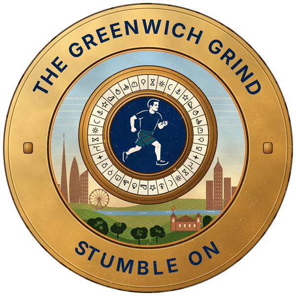

Race 3 · Pre-Race Report
Three generations, one decider. Eighteen names are on the list for the Greenwich Grind, aged from five months to 84, but not all of them are planning to make it to the start line.
Ben and Hamish arrive at one win each. Fin has thrown down the gauntlet, Meg, Eve, Leah and Teo are the dark horses, and the over-80s will contest their own one-mile walk. The Mannion family are new to The Stumble – who knows what they will do.
The route is in the hands of local organiser Katie Mannion, who is also racing. After some moral pressure, the Mannions have disclosed it: the Grind will be run on the Sutcliffe parkrun course in Sutcliffe Park, starting at 9am.
It is three laps of the park on tarmac paths, with a short stretch of grass into the finish. It is very flat, with only about 6m of climbing in the whole race, so Katie's promise of a fast 5km looks safe. The start is by Sutcliffe Park Sports Centre, and the laps take in the park's lakes and nature reserve, with the River Quaggy running through it.
Hamish took the 2025 Stirling 10K by five seconds on Strava (although Ben allegedly crossed the line first). Ben got his revenge at Bryce Canyon, finishing half a minute ahead. The Grind is the decider.
Fin was the standout of the 2025 Stirling 5K, running despite being sick. He has not raced since, and he says training is a gimmick. The Grind will tell.
Katie, Tomas, Gillian (9) and Heather (7) Mannion are all new to The Stumble. Katie knows the course. Are they a threat to Fin's bravado?
The rivalry is level, the comeback is on, and the field is set. See you in Greenwich on Saturday 28th November.
Sutcliffe Park, Eltham (Royal Borough of Greenwich), on the Sutcliffe parkrun course. Start by the Sports Centre. Nearest station: Kidbrooke.
Saturday 28th November 2026, 9am. Leave the Chocolate House at about 8:40am. Spectators welcome!
Running shoes, your Stumble Running Top, and your competitive spirit.
The Grind is just one part of the weekend. Local organiser Katie Mannion has stepped up with the full itinerary.
🥂
Photos after the race.